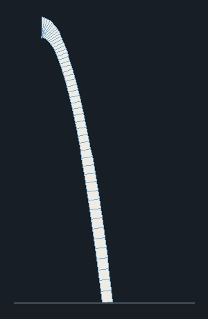
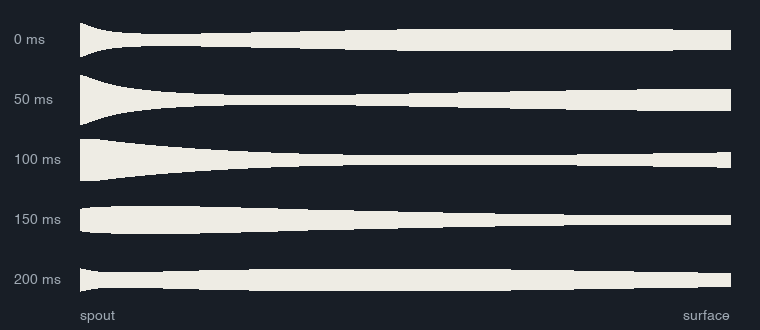
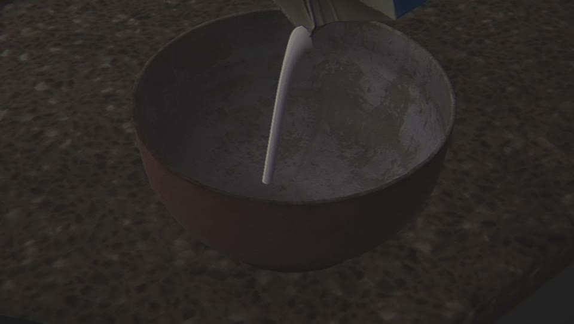
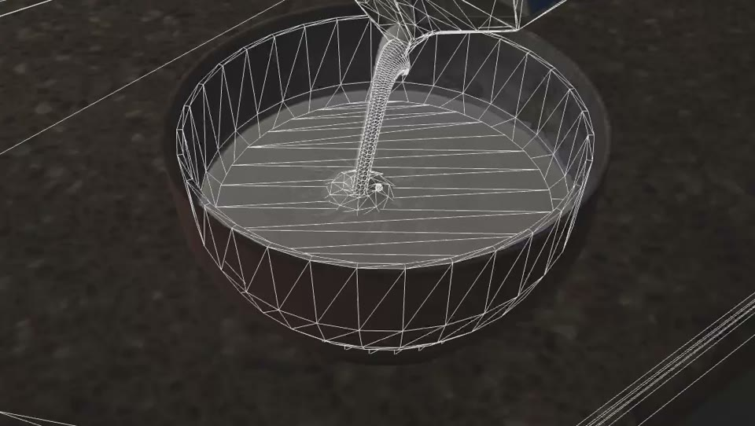
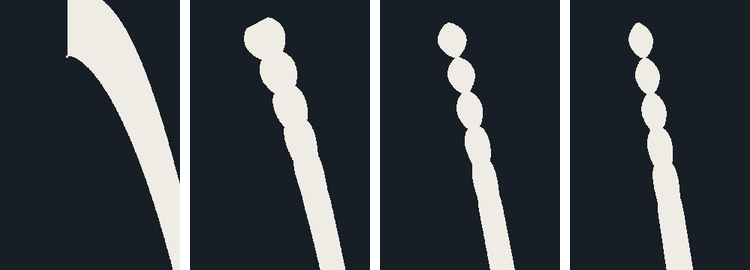
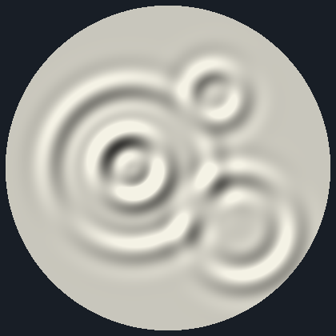

The goal
There's a breakfast scene where you pour your own milk and cereal. Our first version of the pour was a particle effect, and it looked like one: a spray of dots, not a stream of milk.
We wanted it to feel like actual liquid. One stream that falls in a nice arc, glugs as you tip the carton, breaks up into drops when you stop, and makes ripples where it lands.
How it works
The stream is one tube mesh that gets rebuilt in code every frame, 10 sides around and 48 segments long. A separate script on the bowl and a shader on the milk handle everything happening on the surface.
1. The arc
The tube follows the path a thrown object would take, from the carton's spout down to the milk, worked out from the pour speed and gravity. Each segment is a ring of vertices placed along that curve.
The width follows the milk's speed. Falling liquid speeds up, and the same amount of milk moving faster has to get thinner, so the radius shrinks with the square root of the speed, down to 45% of the spout. Every glug from the carton sends a slight bulge down the stream with the milk.
float radius = spoutRadius * Mathf.Max(Mathf.Sqrt(speed0 / ArcVelocity(t).magnitude), minRadiusScale);
radius *= 1f + glugAmount * Glug(time - t);



2. Stopping
When you stop pouring, the arc locks in place so the end of the stream doesn't swing around with the carton. The tail then falls, and the last 5 cm of it pinches into beads about 8 mm apart, using a sine along the stream's length. That's how a real stream of liquid breaks up.

3. The surface
Where the stream lands it starts ripple rings and a patch of foam. Each ring is worked out in the milk shader: a wave that travels outwards at 9 cm a second, with a 1.6 cm wavelength, fading as it grows. Up to eight can run at once, and they're sent per bowl, so other bowls using the same material don't ripple too.

Cereal makes its own ripples when it drops in, and some of it floats up and bobs as the milk rises.
The diagrams on this page were rendered with a Python port of the stream and ripple code. The clip at the top is from the game.